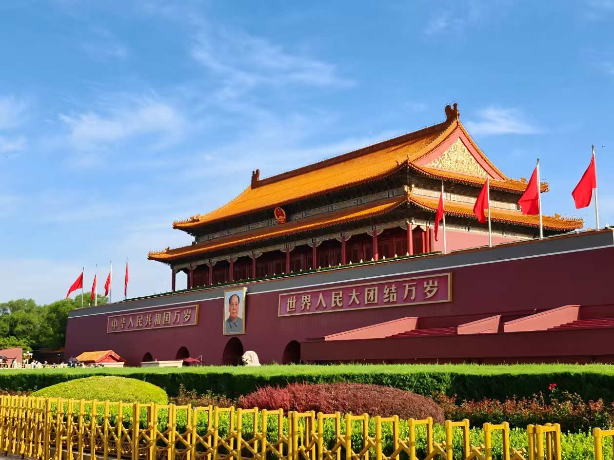

天安门广场位于北京市中心，是世界上最大的城市广场，面积达44万平方米，可容纳100万人举行盛大集会，是中华人民共和国的象征。
天安门城楼坐落在广场的北端，是明清两代北京皇城的正门，始建于明永乐十五年（1417年），原名"承天门"，清顺治八年（1651年）改建后称"天安门"。1949年10月1日，毛泽东主席在这里庄严宣告中华人民共和国成立。
广场中央矗立着人民英雄纪念碑，南面是毛主席纪念堂，西侧是人民大会堂，东侧是中国国家博物馆。每天清晨的升国旗仪式庄严肃穆，吸引着无数游客前来观看。天安门广场是每个到北京的游客必去的地方。
门票：免费（天安门城楼15元/人，需预约）
开放时间：5:00-22:00
升旗时间：每天日出时间，建议提前查询
交通：地铁1号线天安门东站/天安门西站